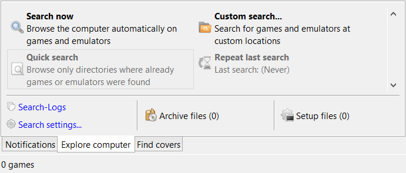

Computer durchsuchen
Schnellsuche
Mit dieser Funktion wird nur an Orten auf dem Computer gesucht, an denen zuvor bereits Spiele oder Emulatoren gefunden wurden.
- Im Informationsbereich den Tab "Computer durchsuchen" anklicken.
- Die Schaltfläche "Schnellsuche" anklicken.
Hinweis:
Diese Schaltfläche wird aktiv, wenn mindestens ein Spiel oder ein Emulator zu emuBro hinzugefügt wurde.
